الباب 05: إشارات الأسبقية وقواعد التقاطعات
الدليل الهندسي الشامل لعصب قواعد السير في إيطاليا: تفكيك الفروق الجوهرية بين التوقف المشروط (Dare Precedenza) والتوقف الإجباري المطلق (STOP)، معايير نطاق الأسبقية (طريق الأولوية Rombo giallo مقابل التقاطع التالي فقط)، تقاطعات اليمين العامة X، إشارات المرور التبادلي الضيق، والأسبقية المطلقة للترام.
المقارنة الفاصلة: التوقف المشروط مقابل التوقف الإجباري المطلق
أكثر نقطة اختبارية تتكرر في أسئلة الموتوريزاسيوني الإيطالية لخداع الطلاب
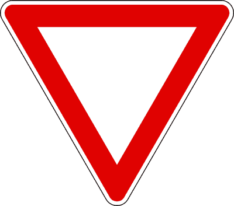
• الحكم القانوني: التوقف ليس إجبارياً إذا كان الطريق خالياً تماماً والرؤية مفتوحة.
• الالتزام: إبطاء السرعة وإعطاء الأسبقية لليمين واليسار.
• العلامة الأرضية: خط عرضي من المثلثات البيضاء الموجهة للخلف.
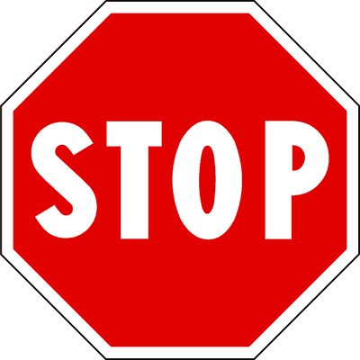
• الحكم القانوني: التوقف التام الإجباري (Arresto obbligatorio) في كل الأحوال حتى لو كان التقاطع فارغاً.
• موقع التوقف: قبل خط التوقف العرضي الأبيض المتصل.
• الالتزام: التوقف التام + إعطاء الأسبقية لليمين واليسار.
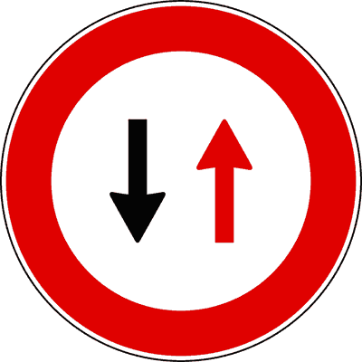
إشارة إعطاء الأسبقية
Dare precedenza (Figura 40)توضع عند مداخل التقاطعات ومسارات الاندماج بالأوتوستراد. تفرض على السائق إبطاء السرعة والاستعداد لإعطاء الأسبقية للمركبات القادمة من اليمين ومن اليسار.
- • يفرض إعطاء الأسبقية للمركبات القادمة من اليمين ومن اليسار معاً (a destra e a sinistra).
- • لا يلزم بالتوقف التام إذا تأكد السائق من خلو التقاطع وإمكانية المرور بأمان دون إعاقة أحد.
- • يتكامل على أرضية الطريق مع خط عرضي من المثلثات البيضاء الموجهة للخلف.
- • يفرض التوقف التام الإجباري في كل الأحوال حتى مع خلو الشارع (خطأ، هذا خاص بإشارة STOP).
- • يلزم بإعطاء الأسبقية للمركبات القادمة من اليمين فقط (خطأ، لليمين واليسار).
إشارة قف وإعطاء الأسبقية
Fermarsi e dare precedenza - STOP (Figura 41)لوحة ثمانية الأضلاع توضع في التقاطعات الخطرة ذات الرؤية المحجوبة ومزلقانات السكك الحديدية غير المحمية. تفرض التوقف التام الإجباري في كل الأحوال.
- • يفرض التوقف التام الإجباري (Arresto obbligatorio) عند خط التوقف الأبيض العرضي في كل الأحوال.
- • يلزم بإعطاء الأسبقية لكافة المركبات القادمة من اليمين واليسار على حد سواء.
- • التوقف يجب أن يكون بدقة عند الخط العرضي على الأرض وليس بمحاذاة عمود الإشارة.
- • يسمح بمتابعة السير دون توقف إذا كان الطريق خالياً تماماً والرؤية مفتوحة (خطأ قاطع FALSO).
- • يلزم بالتوقف فقط في حال وجود سيارات مقبلة من اليمين (خطأ، التوقف قطعي).
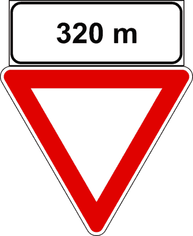
إشعار مسبق بإعطاء الأسبقية
Preavviso di dare precedenza (Figura 42)مثلث مقلوب تلحق به لوحة إضافية تشير لمسافة بالأمتار فقط مثل [150 m]. ينبه السائق بأنه بعد المسافة المكتوبة سيصل لإشارة Dare Precedenza عادية.
- • ينبه بوجود إشارة إعطاء أسبقية بعد المسافة المحددة في اللوحة السفلية.
- • يدعو لتخفيف السرعة تدريجياً للاستعداد لإعطاء الأسبقية لليمين واليسار.
- • اللوحة السفلية لا تحتوي إطلاقاً على كلمة STOP بل أرقام فقط.
- • ينبه باقتراب إشارة قف STOP (خطأ، إشعار STOP يحتوي على كلمة STOP واضحة).
- • يفرض التوقف الإجباري الفوري عند موضع اللوحة (خطأ).
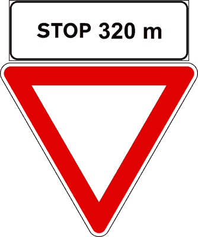
إشعار مسبق لإشارة قف (STOP)
Preavviso di STOP (Figura 43)مثلث مقلوب تلحق به لوحة مستطيلة بيضاء مدون بها كلمة [STOP 150 m]. ينبه بوجوب التوقف التام الإجباري عند التقاطع التالي بعد المسافة المحددة.
- • ينبه السائق باقتراب تقاطع محكوم بإشارة قف STOP على بعد المسافة المكتوبة.
- • شكل الإشارة مثلث مقلوب (Triangolare) وليس شكلاً ثمانياً.
- • يفرض الاستعداد للتوقف التام عند خط التوقف العرضي القادم.
- • شكله ثماني الأضلاع مثل لوحة STOP الأصلية (خطأ FALSO، الإشعار المسبق شكله مثلث مقلوب).
- • يشير لإلغاء إشارة الوقف إذا كان الطريق سالكاً (خطأ).
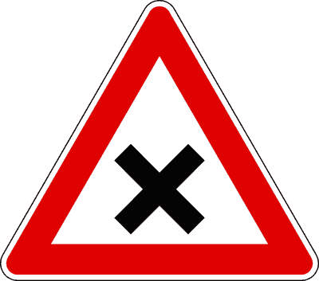
تقاطع مع الأسبقية لليمين فقط
Intersezione con precedenza a destra (Figura 44)مثلث خطر يحمل علامة X سوداء. ينبه باقتراب تقاطع تطبق فيه القاعدة العامة لقانون السير: إعطاء الأسبقية لمركبات اليمين فقط (Solo a destra).
- • ينبه بتقاطع يجب فيه إعطاء الأسبقية للمركبات القادمة من جهة اليمين فقط.
- • يمنح السائق حق الأسبقية على المركبات القادمة من جهة اليسار.
- • يلغي أي أسبقية سابقة كانت ممنوحة للسائق على الطريق.
- • يلزم بإعطاء الأسبقية لليمين واليسار معاً (خطأ، لليمين فقط).
- • يشير لوجود مزلقان سكة حديد بصليب سانت أندريا (خطأ).
إعطاء الأسبقية في المرور التبادلي
Dare precedenza nei sensi unici alternati (Figura 45)دائرة بإطار أحمر وسهم أحمر صاعد باتجاهك. تلزم بالتوقف وإعطاء الأسبقية للمركبات المقابلة في المسارات الضيقة التي لا تتسع لمركبتين معاً.
- • يوضع قبل المضايق واختناقات الطرق حيث يسمح بمرور صف واحد من المركبات بالتناوب.
- • السهم الأحمر يلزم اتجاهك بالتوقف وإفساح الطريق للمرور المعاكس.
- • لا يلزم بالتوقف إذا كان المضيق خالياً تماماً من المركبات القادمة في الاتجاه المقابل.
- • يمنحك حق الأسبقية على الاتجاه المعاكس (خطأ، هو إعطاء أسبقية).
- • يشير لطريق باتجاه واحد إجباري (خطأ، الطريق ذو اتجاهين بحركة تبادلية).
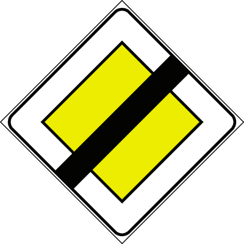
نهاية حق الأسبقية
Fine del diritto di precedenza (Figura 46)معين أصفر مشطوب بشريط أسود مائل. يعلن انتهاء طريق الأسبقية والعودة لقاعدة الأسبقية العامة للقادم من اليمين في التقاطعات القادمة.
- • يشير إلى أن الطريق فقد ميزة الأولوية ولم تعد للمركبة أسبقية مطلقة في التقاطعات اللاحقة.
- • يفرض زيادة الانتباه وتطبيق قاعدة الأسبقية لليمين ما لم توجد إشارات أخرى تنظم ذلك.
- • يمكن أن تتبعه إشارة قف STOP أو Dare precedenza قبل التقاطع التالي.
- • يفرض التوقف الفوري الإجباري بمحاذاة اللوحة (خطأ).
- • يشير لنهاية طريق باتجاه واحد (خطأ، لا علاقة له بعدد الاتجاهات).
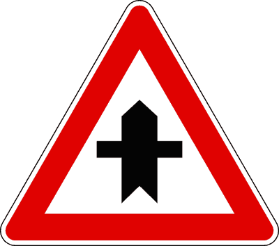
تقاطع ذو حق أسبقية
Intersezione con diritto di precedenza (Figura 47)مثلث خطر بسهم رأسي عريض وخط عرضي رفيع. يمنح السائق حق الأسبقية على المركبات القادمة من اليمين واليسار في التقاطع المباشر القادم فقط.
- • يمنح الأسبقية على القادمين من اليمين واليسار في التقاطع القادم فقط (Incrocio successivo).
- • الطرق الفرعية الجانبية المتقاطعة ملزمة بإشارات Dare precedenza أو STOP.
- • يفرض على السائق تخفيف السرعة والتحقق بحذر من انصياع الآخرين للإشارة.
- • يمنح حق الأسبقية في جميع التقاطعات التالية على طول الطريق (خطأ، للتقاطع القادم فقط).
- • يسمح بالمرور بأقصى سرعة دون تهدئة (خطأ، الحذر وتخفيف السرعة إلزاميان دائماً).
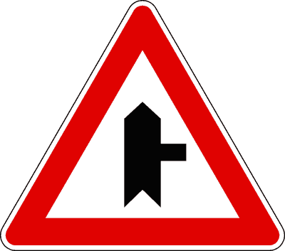
تقاطع تفرع T مع أسبقية من اليمين
Intersezione a T con diritto di precedenza da destra (Figura 48)ينبه بوجود تقاطع فرعي ملتحم من جهة اليمين فقط على شكل حرف T، مع تمتع مسارك بحق الأسبقية على القادمين من هذا الطريق الفرعي في التقاطع القادم.
- • ينبه بمدخل طريق جانبي فرعي من جهة اليمين.
- • يمنح الأسبقية لمركبتك على المركبات القادمة من اليمين في هذا التقاطع.
- • القادمون من الطريق الفرعي يجدون إشارة Dare precedenza أو STOP.
- • يفرض الانعطاف إجبارياً لليمين (خطأ، الإشارة لا تفرض أي اتجاه إجباري).
- • يلزمك بإعطاء الأسبقية لمركبات اليمين (خطأ، أنت صاحب الأولوية هنا).
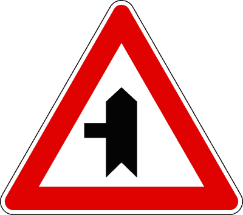
تقاطع تفرع T مع أسبقية من اليسار
Intersezione a T con diritto di precedenza da sinistra (Figura 49)ينبه بالتقاء طريق فرعي جانبي من جهة اليسار دون وجود تقاطع كامل، مع تمتع مسارك بحق الأسبقية على المركبات القادمة من اليسار في هذا التقاطع.
- • يمنحك حق الأسبقية على المركبات القادمة من الطريق الفرعي الأيسر.
- • يوضح أن الطريق المتقاطع هو طريق ثانوي ينتهي عند هذا التقاطع (a T).
- • يمنع السير للأمام ويفرض الانعطاف يساراً (خطأ).
- • يشير لوجود طريق ذي اتجاه واحد نحو اليسار (خطأ).
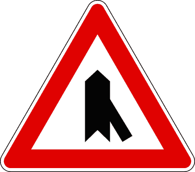
اندماج مروري من اليمين
Confluenza a destra (Figura 50)يوضع على الأوتوستراد والطرق السريعة ذات الاتجاه الواحد لتنبيه السائق باقتراب حارة تسارع (Corsia di accelerazione) تلتحم بالمسار الرئيسي من اليمين.
- • يوضع في الطرق السريعة ذات المسارين المنفصلين حيث حركة السير باتجاه واحد.
- • يمنح الأسبقية للمركبات السائرة على المسار الرئيسي على المركبات المندمجة من حارة التسارع.
- • يلزم السائق بالانتباه للمركبات الداخلة وتسهيل اندماجها إن أمكن دون تعريض نفسه للخطر.
- • يلزم السائق على الطريق السريع بإعطاء الأسبقية للسيارات الداخلة (خطأ، الداخل هو الملزم بإعطاء الأسبقية).
- • يشير لتفرع الأوتوستراد إلى اتجاهين (خطأ، هو التحام وليس تفرعاً).
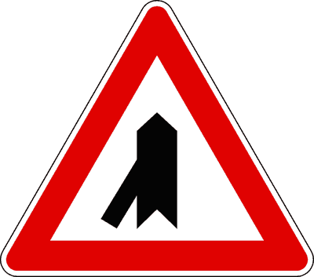
اندماج مروري من اليسار
Confluenza a sinistra (Figura 51)ينبه بالتحام مروري من جهة اليسار على الطرق السريعة ذات الاتجاه الواحد مع تمتع مسار الطريق الرئيسي المستمر بحق الأسبقية على السيارات المندمجة.
- • يوضع على الطرق السريعة عند مداخل الاندماج اليسارية.
- • يحافظ على حق الأسبقية للمركبات السائرة بالفعل في مسار الطريق الرئيسي.
- • يفرض على سيارات المسار الرئيسي التوقف التام للسماح بدخول القادمين من اليسار (خطأ).
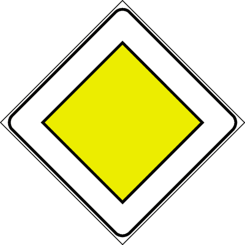
طريق ذو حق أسبقية
Strada con diritto di precedenza (Figura 52)معين أصفر ذو إطار أبيض وأسود. يوضع في بداية وعلى طول الطرق الرئيسية ليمنح السائق حق الأسبقية على جميع المركبات القادمة من اليمين واليسار في جميع التقاطعات التالية.
- • يمنح حق الأسبقية في كافة التقاطعات التالية على امتداد الطريق حتى إشارة النهاية.
- • تتكرر الإشارة بعد كل تقاطع رئيسي لتأكيد استمرار صفة الأولوية للطريق.
- • يمكن تزويده بلوحة توضح المسار المنعطف للطريق الرئيسي (Fig. 972).
- • يسري مفعوله للتقاطع القادم فقط (خطأ، هذا خاص بالمثلث ذي السهم العريض Fig. 47).
- • يمنح الأسبقية على سيارات الإسعاف والشرطة ذات السارينات المشتعلة (خطأ مطلق).
- • يعفي السائق من تخفيف السرعة عند التقاطعات (خطأ).
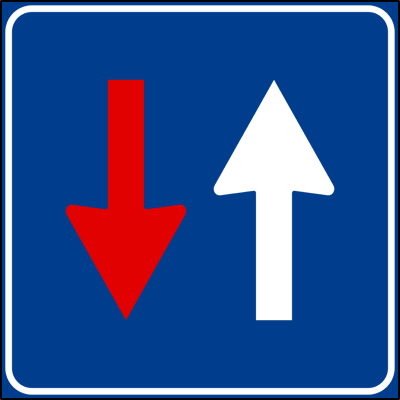
حق الأسبقية في المرور التبادلي
Diritto di precedenza nei sensi unici alternati (Figura 53)مربع أزرق بسهم أبيض في اتجاهك وسهم أحمر في الاتجاه المقابل. يمنح اتجاهك حق الأسبقية في العبور عند أجزاء الطريق الضيقة والجسور المؤقتة.
- • يمنحك حق الأولوية في عبور المسار الضيق على المركبات القادمة في الاتجاه المعاكس.
- • يقابله في الاتجاه الآخر الإشارة الدائرية الحمراء الملزمة بإعطاء الأسبقية (Fig. 45).
- • يجب التأكد من عدم وجود مركبة مقابلة شرعت بالفعل في العبور قبل الدخول في المضيق.
- • يلزمك بالتوقف وإفساح الطريق للمرور المعاكس (خطأ، بل أنت صاحب الأسبقية).
- • يسمح بالعبور دون أي حذر حتى لو كانت مركبة مقابلة قد حاصرت المضيق بالفعل (خطأ).
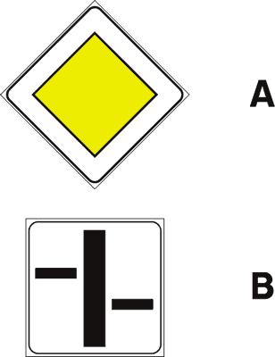
مسار الطريق الرئيسي ذي الأولوية
Andamento della strada principale (Figura 972)لوحة إضافية مستطيلة توضع أسفل إشارة المعين الأصفر (Fig. 52). يمثل الخط العريض مسار طريق الأولوية المنعطف، بينما تمثل الخطوط الرفيعة الطرق الفرعية الخاضعة للأسبقية.
- • الخط العريض يحدد المسار المستمر لطريق حق الأسبقية عند انعطاف التقاطع.
- • المركبة التي تتبع مسار الخط العريض تحتفظ بحق الأسبقية على المركبات القادمة من الخطوط الرفيعة.
- • القادمون من الطرق الممثلة بالخطوط الرفيعة ملزمون بإعطاء الأسبقية.
- • تنزع الأسبقية من السائق إذا قرر الانعطاف متبعاً مسار الخط العريض (خطأ، الأسبقية تتبع الخط العريض).
- • تمنع الانعطاف أو الدوران للخلف (خطأ، هي لوحة توضيحية فقط).
التوقف الكامل الإلزامي لعجلات المركبة في كافة الظروف والأحوال، حتى مع خلو الطريق التام، ويقترن حصراً بإشارة قف (STOP).
خط أبيض متصل مرسوم بعرض المسار، يحدد الموضع الدقيق لوجوب توقف مقدمة المركبة عند إشارة STOP أو الإشارة الضوئية الحمراء.
التقاطع المفرد الأول الذي يلي الإشارة مباشرة، وهو النطاق المكاني الحصري لسريان أسبقية مثلثات الخطر ذات السهم العريض (Fig. 47-51).
القاعدة الإلزامية المقترنة بإشارتي Dare precedenza و STOP، وتفرض إفساح الطريق للمركبات القادمة من كلا الاتجاهين المتقاطعين.
القاعدة العامة لقانون السير عند انعدام الإشارات أو عند وجود إشارة التقاطع ذات علامة X (Fig. 44)، حيث تعطى الأولوية للقادم من اليمين حصراً.
نظام تنظيم السير في أجزاء الطرق الضيقة التي لا تتسع لمرور مركبتين في وقت واحد، وتتحكم به الإشارة الدائرية (Fig. 45) والمربعة (Fig. 53).
إشارة مثلثة مقلوبة مرفقة بلوحة مكتوب عليها [STOP 150m]، تنبه بوجوب التوقف الإجباري القاطع بعد المسافة المكتوبة.
لوحة المعين الأصفر المشطوب، وتعلن انتهاء امتياز الأولوية على الطريق وعودة التقاطعات القادمة لقاعدة الأسبقية العامة للقادم من اليمين.
الترام والمركبات التي تسير على قضبان تتمتع بالأسبقية العامة المطلقة دائماً عند التقاطعات (قادمة من اليمين أو اليسار) ما لم توجد إشارة صريحة تلزمها بخلاف ذلك.